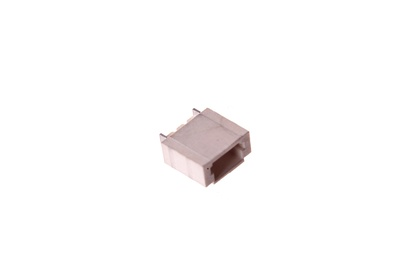
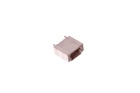
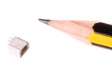
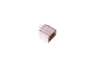

1 mm 2 Pin JST Socket (SMD) - J102

Summary
Name: 1 mm 2 Pin JST Socket (SMD)
ID: JSTS-01-X-02PI-SM
Hex ID: J102
WebPage: https://github.com/oomlout/oomlout-OOMP/wiki/JSTS-01-X-02PI-SM
Short URL: http://oom.lt/J102
Revision History: https://github.com/oomlout/oomlout-OOMP/blob/master/parts/JSTS-01-X-02PI-SM/
| Type |
Size |
Color |
Description |
Index |
JSTS
JST Socket |
01
1 mm |
X
|
02PI
2 Pin |
SM
(SMD) |
Images



About
This part is awaiting a description.
Specifications
| Info |
Value |
| Type |
JST Socket |
| Size |
1 mm |
| Description |
2 Pin |
| Index |
(SMD) |
Extra Details
Spotted a mistake, want to add more? Let us know oomp@oomlout.com
All images and resources are licensed [CC BY-SA] unless otherwise stated (ie. the datasheets)